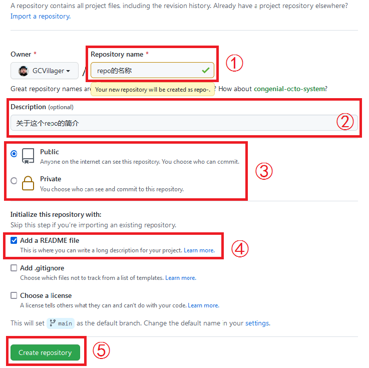

2：开始使用Git
创建一个Github Repository
Repository，有人译为仓库。我们就叫它仓库好了，或者称为repo，因为单词我不会拼。
首先我们需要创建一个仓库，登录你的账号，点击右上角的“+”号，在出现的页面里点击“New repository”，然后就会出现创建仓库的页面。

如图，在这个界面里：
第一个框写repo的名字，要求不能与自己已有的repo重名。可以起一个很响亮的名字。 也可以：“好过分！我要给它取一个很难听的名字！” 由于我们现在的教学是以搭建github博客为主题的，所以建议你命名为：[你的Github用户名].github.io。当然，其他时候就随便命名。
第二个框是简介，可以让人看到你这个仓库的时候更快知道这是什么。可以不写。
第三个框是选择仓库是公开还是私有。如果公开，所有人都可以看到源码；如果私有，只有自己和被自己邀请的人能看到。私有仓库有一些限制。
为了使用方便，我们把“Add a README file”点起来。就是第四个框的内容。
第五个框，完成之前的内容后，点击就可以创建一个新的repo。
于是你的账号下面就有了一个repo。现在，访问https://github.com/[用户名]/[repo名]即可看到你的仓库。此刻，你的仓库里空空如也，只有一个README文件。
clone仓库
现在我们的仓库在Github上托管着。我们需要把仓库下到本地来。
你可能会问：Github上不是可以直接修改吗？为什么不直接那么做？因为有的时候我们需要一次性执行大量更改，直接在Github上改可能会导致历史版本非常混乱。再说，直接在本地改，可以用功能更强大的软件，不是更好吗？
于是我们回到把仓库clone下来这个主题上。找到你希望存仓库的地方，右键，Git Bash Here。现在出来一个黑框框了。此黑框者，人称 Git Bash 。输入以下命令：
$ git clone https://github.com/[用户名]/[repo名].git
比如说我的用户名是GCVillager，仓库名是GCVillager.github.io，就输入这个指令：
$ git clone https://github.com/GCVillager/GCVillager.github.io.git
然后它就会开始 高 速 下 载
接下来，原先那个文件夹里就会多出来一个文件夹，名字和你的仓库名是一样的。你可以直接在刚刚用的那个 Bash 里输入这样的指令，进入这个新出现的文件夹里：
$ cd [路径名]
你也可以在系统里进入这个文件夹，再打开一个新的 Git Bash 。
提交更改
假设你在里面加了你要加的文件，现在要把这个仓库提交到 Github 上，该怎么做呢？
在 Git Bash 里输入这样一串玩意：
$ git add .
$ git commit -m "[一段关于这次更改的描述]"
$ git push
于是你的玩意就会开始 高 速 上 传 。完成之后，再去 Github 上看，就能看到你的仓库的更新内容了。
不过既然 Git 是有多人合作的用途的，如果你 clone 仓库之后，有人更改过 Github 上的内容了，你 push 上去岂不是会覆盖别人的内容？我们需要在这三道指令最前面加上这样一道：
$ git pull
这指令会将远端的内容同步过来，并合并。你在本地的修改当然不会丢失。这样就完成了多人协作的目的。